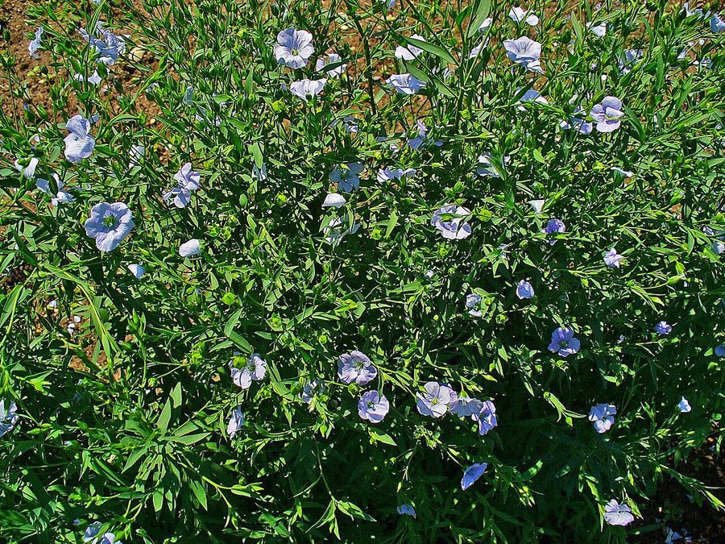

अलसीLinseed
Linum usitatissimum · Linaceae · FLR-0275

- Scientific name वैज्ञानिक नाम
- Linum usitatissimum L.
- Family कुल
- Linaceae
- Hindi हिंदी
- अलसी
- Local names स्थानीय नाम
- alsi, tisi, teesi, linseed, flax
- Status here यहाँ की स्थिति
- cultivated
- Movement आवागमन
- Resident, here all year
- Known from कहाँ दर्ज
- Others have published records from the wider Awadh–Purvanchal plain, none yet from Basti–Ayodhya अवध–पूर्वांचल से दूसरों के प्रकाशित अभिलेख, बस्ती–अयोध्या से अभी नहीं
- IUCN IUCN
- not evaluated
- Review समीक्षा
- audited and independently read
When to look कब देखें
Expected mainly in October, November, December, January, February, March. मुख्यतः अक्टूबर, नवंबर, दिसंबर, जनवरी, फ़रवरी, मार्च में अपेक्षित।
Uses and possibilities उपयोग और संभावनाएँ
“Traditional medicine” means a documented traditional use, not a claim that it works. Nothing on this page is medical advice.
Drawn from the documented uses in the profile below, where each is labelled traditional, current or a research lead. All uses →
Tell it apart from इनसे अलग पहचानें
अलसी / Linseed
Linum usitatissimum L. — Linaceae
अलसी — एक सदियों पुरानी तेल और रेशा दोनों फसल है जो अब यूपी में सीमित पर महत्वपूर्ण रूप से उगाई जाती है। यह एक सीधे बढ़ने वाला, पतला, ऊँचा वार्षिक पौधा (30–60 सेमी) है जिसकी पत्तियाँ नुकीली और बहुत छोटी होती हैं। इसके नीले, गुलाबी, या सफेद फूल सुंदर होते हैं। सर्दियों में (दिसंबर-जनवरी) फूलों के बाद गोल, सपाट कैप्सूल बनते हैं जिनमें भूरे या सुनहरे, चिपचिपे बीज होते हैं। स्थानीय लोग इसके बीजों को पीसकर पेस्ट बनाते हैं जिसे सर्दी की खाँसी में दिया जाता है। तेल को दीये में जलाया जाता है। रेशे को सन की रस्सी बनाने में प्रयोग किया जाता है।
Quick Identification त्वरित पहचान
| Feature | Description |
|---|---|
| Form | Erect, slender annual herb, 30–60 cm tall, unbranched or sparsely branched |
| Leaves | Alternate, linear-lanceolate, 1.5–3 cm long, pointed tips, bluish-green color |
| Flowers | Terminal cymose clusters, petals five, papery, blue, pink, or white, 1–1.5 cm across |
| Fruit | Globose capsule, 6–8 mm, pale yellow, dehiscent, containing 10 seeds |
| Seeds | Flattened oblong, 4–6 mm, brown to golden, mucilaginous when wetted |
Field tip: A slender, unbranched herb with linear leaves and delicate blue, pink, or white flowers on terminal stalks; mature capsules are round and straw-colored.
Morphology आकारिकी
| Feature | Measurement |
|---|---|
| Plant height | 30–60 cm |
| Leaf length | 1.5–3 cm |
| Leaf width | 0.2–0.5 cm |
| Flower diameter | 1–1.5 cm |
| Capsule diameter | 6–8 mm |
| Seed length | 4–6 mm |
Stem: Herbaceous, terete (cylindrical), smooth, unbranched or sparsely branched, green becoming reddish at maturity.
Roots: Taproot with lateral roots; does not form nitrogen-fixing nodules but benefits from crop rotation.
Associated Species / Interactions सहजीवी संबंध
- Crop rotation: Part of winter crop rotations; improves soil structure through residue incorporation
- Insect hosts: Hosts various leaf beetles and small insects; seed is food for finches and sparrows
- Bird seed: Ripe seeds are occasionally eaten by granivorous birds
- Traditional fiber: Historically grown with wheat in Europe; minimal intercropping in modern Indian agriculture
Life Cycle / Phenology जीवन चक्र
- Sowing: Sown in October–November with winter rains, on well-prepared fields
- Germination: Emerges within 10–12 days with adequate soil moisture
- Vegetative growth: Develops long slender stems and linear leaves in November–December
- Flowering: Flowers bloom in December–January; petals are papery and shed within a few hours of opening
- Capsule maturation: Capsules develop and dry out rapidly in February–March
- Harvest: Mature dry capsules are harvested in February–March; seeds are dried and winnowed
Pests and Diseases कीट और रोग
- Leaf spot: Septoria and Colletotrichum species cause small dark spots on leaves
- Pasmo disease: Phoma fungus causes stem lesions and premature senescence in wet seasons
- Seed weevil: Bruchus beetles infest stored seeds; stored linseed requires tight sealing
- Rust: Occasional rust infection (Melampsora lini) in humid conditions
Agricultural / Human Relevance कृषि प्रासंगिकता
Oil, fiber, and medicinal seed crop.
- Linseed oil: Seeds are rich in oil rich in alpha-linolenic acid (omega-3); oil is used for cooking in some regions and as a drying oil in paints and varnishes
- Seed use: Whole seeds or seed powder are added to grain rotis as a nutritional supplement; believed to prevent constipation
- Traditional medicine: Ground linseed mixed with honey is a home remedy for cough and respiratory ailments in winter
- Linen fiber: Stems yield fiber used traditionally for rope and fabric (less common in modern UP agriculture)
- Cultivars: Varieties include NL-97, NL-2127, and local landraces
Traditional and Ethnobotanical Use
- Linseed poultice: Ground warm linseed mixed with mustard oil is applied to inflamed joints for pain relief
- Respiratory remedy: Linseed paste in hot water is given as a winter cough remedy
- Seed saving: Farmers traditionally save seeds for the next season
Cultivation Calendar
| Stage | Month(s) |
|---|---|
| Field preparation | September–October |
| Sowing | October–November |
| Vegetative growth | November–December |
| Flowering | December–January |
| Capsule maturation | February |
| Harvest | February–March |
Expected Locally स्थानीय रूप से अपेक्षित
Not a field record. Written from published accounts for eastern Uttar Pradesh. No confirmed local sighting yet — if you have seen it, that is what the atlas needs.
अभी तक स्थानीय पुष्टि नहीं। यह विवरण प्रकाशित स्रोतों से है, किसी अवलोकन से नहीं।
Linum usitatissimum is expected as a winter oil crop in Basti district. Look for it in fields from October through March, typically in well-drained upland tracts. The first local record would be a photograph with date and location.
Distribution वितरण
Global range: Domesticated in the Fertile Crescent over 6,000 years ago; now cultivated worldwide for oil and fiber.
In India: Grown in all states; major producers include Madhya Pradesh, Rajasthan, and Uttar Pradesh.
In Uttar Pradesh: Cultivated in plain districts during the Rabi season; moderate acreage in the Indo-Gangetic plain.
In Basti district / eastern UP: Cultivated resident; grown on a limited but steady acreage by farmers for oil and seed.
Research Questions शोध प्रश्न
- How much linseed oil can be extracted from a handful of seeds by traditional hand-pressing methods? / परंपरागत हाथ की विधि से अलसी के बीजों से कितना तेल निकल सकता है?
- Does seed size predict oil content, and can farmers select high-oil seeds by visual appearance?
- How long do linseed seeds remain viable when stored in traditional earthen containers versus sealed plastic?
- What is the antimicrobial effect of linseed poultice on infected wound dressing in animal husbandry?
- Can children crush dried linseed pods by hand and separate the seeds without modern threshing equipment? — A traditional skills activity.
Similar Species मिलती-जुलती प्रजातियाँ
| Species | Key Difference | हिंदी | |
|---|---|---|---|
| Linum alpinum (Alpine Flax) | Taller; flowers are larger; found only at high altitudes in Himalayas, not cultivated in plains | हिमालय में, बड़े फूल | |
| Ricinus communis ([[castor\ | Castor]]) | Much taller shrub; leaves are large and palmate; seeds are large and mottled | बहुत बड़ा झाड़ी, बड़ी पत्तियाँ |
| Carthamus tinctorius ([[safflower\ | Safflower]] [FLR-0276]) | Taller plant with large spiny compound leaves; flowers are bright orange-yellow with spines | खरदार पत्तियाँ, नारंगी फूल |
Field rule: A slender, unbranched herbaceous plant with tiny linear leaves, delicate blue or pink flowers, and round capsules containing flattened mucilaginous seeds distinguishes linseed.
Taxonomy & Classification वर्गीकरण
Original description. Carl Linnaeus described Linseed as Linum usitatissimum in 1753 in Species Plantarum, Vol. 1, p. 277. The genus name Linum is the classical Latin name. The specific epithet usitatissimum means "most useful," referring to the crop's multiple uses.
Subspecies. Monotypic; varieties are classified by seed color (golden, brown) and plant height (fiber vs. oil types).
Family and order placement. Order Malpighiales, family Linaceae, the monotypic genus for cultivated flax.
Phylogenetic notes. Linum usitatissimum is derived from the wild species Linum bienne, domesticated in the Near East over 6,000 years ago; it is one of the oldest crop plants.
IUCN status rationale. Not evaluated. As a globally cultivated crop, it faces no conservation threats.
Photo Gallery फोटो गैलरी
No photos yet — add field photos to media/species/linseed/ and run node scripts/sync_photos.js.
References संदर्भ
- Linnaeus, C. (1753). Species Plantarum. Laurentii Salvii, Holmiae, Vol. 1, p. 277. [original description]
- Indian Council of Agricultural Research (2021). Handbook of Oil Crops. ICAR, New Delhi.
- Directorate of Rapeseed-Mustard Research (2019). Production Technology for Linseed. DRMR, Bharatpur.
- Chauhan, J.S. & Lodha, S. (2007). Linseed in India: Production and Utilization. Journal of Oilseeds Research 24(2).
- Botanical Survey of India (2015). State Flora Series: Flora of Uttar Pradesh. BSI, Kolkata.
- GBIF Occurrence Data — Linum usitatissimum, India (2024–2026).
Source file: species/flora/crops/linseed.md